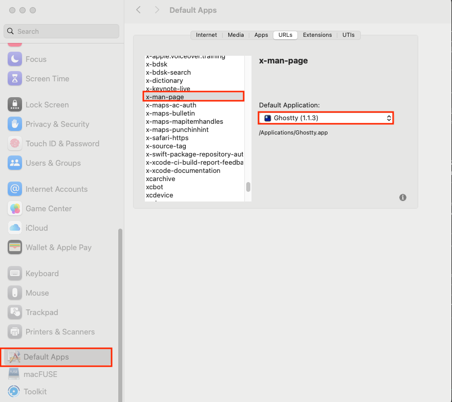
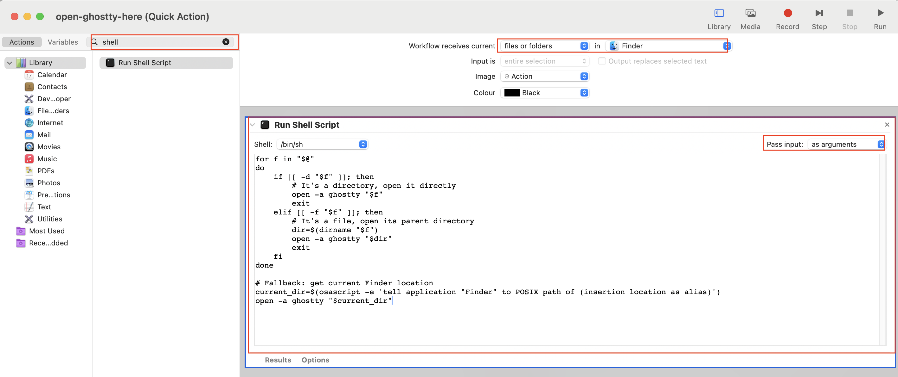
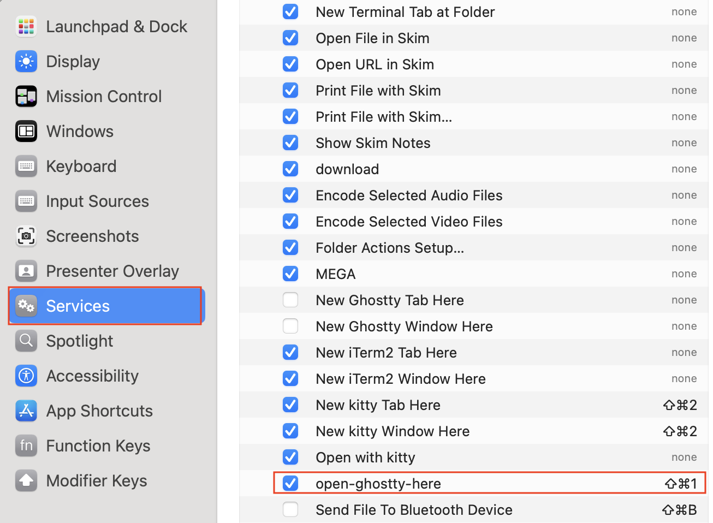

Transform Your Terminal with Ghostty and Yazi
1 Introduction
Why I Switched from Kitty and Vifm to Ghostty and Yazi? After years of experimenting with different terminal emulators and file managers, I’ve finally found my favorite combination: Ghostty and Yazi. These have recently gained a lot of popularity in the community. Briefly put, Ghostty is a modern terminal emulator that is fast, feature-rich, and native. Yazi is a blazing-fast terminal file manager. Together, they have transformed my daily workflow. In this blog, I’ll show you how to set them up on your own computer, so you can supercharge your terminal experience just like I did.
Note: here I assume the default fish shell is used. You can install it in this blog.
2 Install Ghostty
2.1 brew install ghostty
brew install --cask ghostty2.2 set ghostty as default terminal emulator on mac
- Install the “RCDefaultApp.prefPane” plugin
This plugin is used to set the default app for opening terminal in your system.
git clone https://github.com/JakeJing/fishconfig.git
sudo mv fishconfig/kitty/RCDefaultApp.prefPane /Library/PreferencePanes/- Set ghostty as the “default app” for opening terminal
Go to system preferences -> default Apps -> click the “default Apps” -> URLS -> x-man-page -> set the default application as “ghostty”.

- Add keyboard shortcut (shift-cmd-1) to open a new Ghostty window here
You can set a keyboard shortcut to open Ghostty here. However, the default option only works when your cursor is on a folder. To enable it when your cursor is on a file, you can create a new service using the Automator application. To do this, go to Automator -> Quick Action, and follow the steps in the image below.

After that, you can go to System Preferences -> Keyboard -> Shortcuts -> Services -> open-ghostty-here to add it (shift-cmd-1).

This will automatically open a new Ghostty window here when you press shift-cmd-1. If there is an ongoing Ghostty window, it will open a new tab instead. So far there is no easy way to always open a new window (rather than a new tab or a new process) on mac, as far as I know.
# check the services
ls ~/Library/Services/- add configuration file for ghostty
wget https://raw.githubusercontent.com/JakeJing/dotfiles/refs/heads/main/.config/ghostty/config -P ~/.config/ghostty/3 Install Yazi
3.1 brew install yazi and its dependencies
brew update
brew install yazi ffmpeg sevenzip jq poppler fd ripgrep fzf zoxide resvg imagemagick font-symbols-only-nerd-font3.2 set alias in fish config
# yazi
alias yz yazi
alias y yazi
alias a yazi3.3 add configuration file and keymap for yazi
# clone my dotfiles
git clone https://github.com/JakeJing/dotfiles.git
# move yazi config
mv dotfiles/.config/yazi -P ~/.config/yazi/